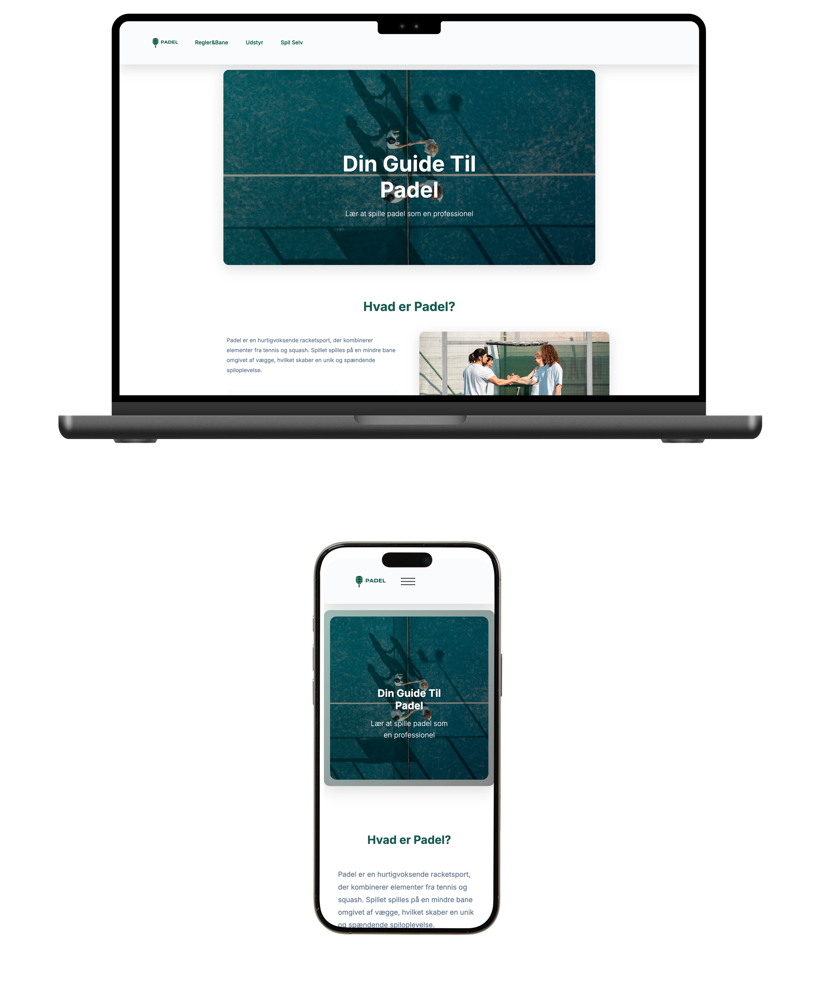
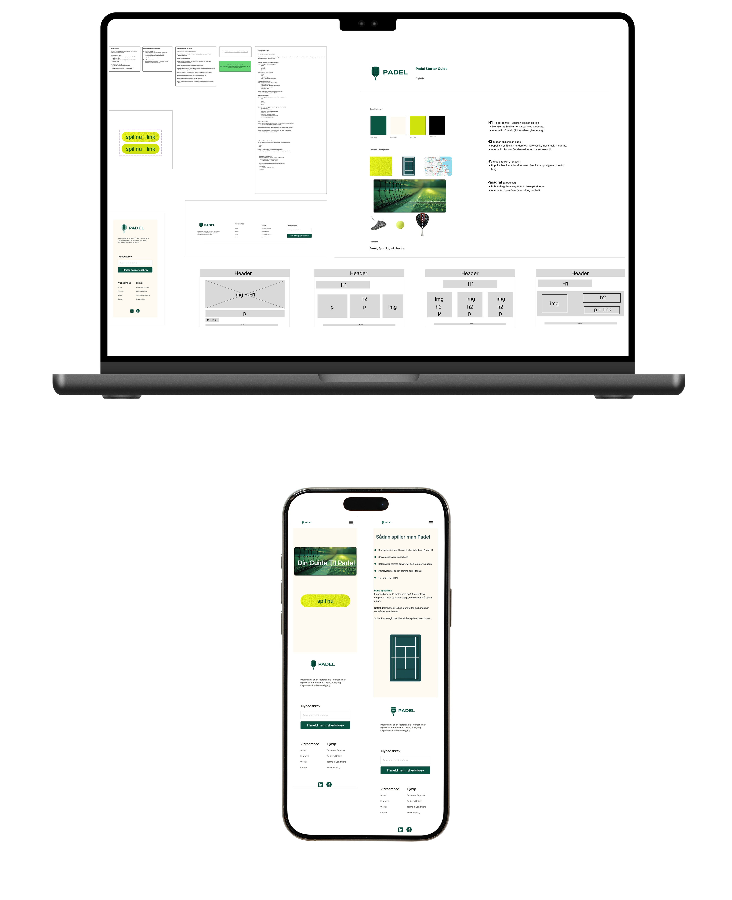
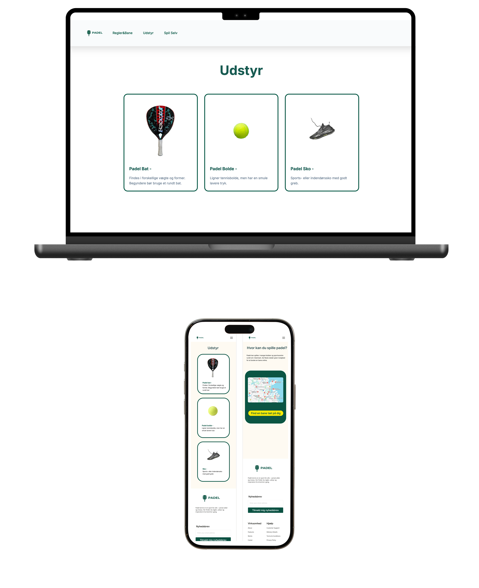
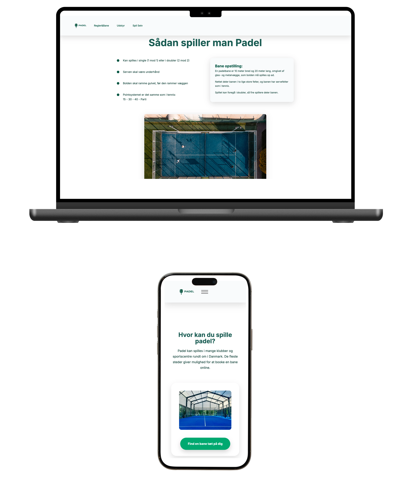

Emnesite
Tema 3 - Grundlæggende UI/UX
Introduktion
I Tema 3 arbejdede jeg med grundlæggende UI- og UX-design med fokus på at udvikle digitale løsninger med udgangspunkt i brugeren. Temaet introducerede mig til UX-processer såsom research, strukturering af indhold, idéudvikling, prototyping og brugertest, hvor Figma har været et centralt værktøj gennem hele designprocessen.
Formålet var at lære at træffe designbeslutninger baseret på brugerindsigter og at kunne dokumentere og formidle designprocessen.
Projektet hed Emnesite og tog udgangspunkt i emnet Padel, hvor jeg udviklede et website baseret på research, wireframes, prototyper og brugertest med fokus på brugeroplevelse.
Løsning
Opgaven bestod i at designe og udvikle et informativt website om padel med fokus på begyndere. Websitet guider brugeren gennem sportens grundlæggende elementer, herunder hvad padel er, regler og bane, udstyr samt hvor man kan spille.
Løsningen er opbygget med en overskuelig struktur og et visuelt udtryk, der understøtter sportens identitet. Designet er enkelt og sporty med fokus på læsbarhed, klare call-to-actions og intuitiv navigation.

Proces
Arbejdet startede med research og survey for at opnå indsigt i målgruppen og deres behov i forhold til information om padel. På baggrund af researchen udarbejdede jeg en struktur for sitet og arbejdede videre med wireframes i Figma for at fastlægge layout og indholdsplacering.
Herefter udviklede jeg moodboard og styletile, som definerede farver, typografi og det visuelle udtryk. Disse valg blev omsat til en klikbar prototype i Figma, som viste både mobil- og desktopversioner af sitet.
Prototypen blev brugertestet, og testresultaterne gav konkrete indsigter i navigation, forståelse af indhold og visuelle valg. På baggrund af testen foretog jeg justeringer i layout og indhold, inden designet blev implementeret som færdigt website.

Læring
- Jeg lærte at arbejde struktureret med en UX-proces fra research til færdig løsning.
- Jeg fik erfaring med at bruge survey og brugertest som grundlag for designbeslutninger.
- Jeg lærte at omsætte Figma-design og prototyper til et fungerende website.
- Jeg blev bedre til at argumentere for designvalg ud fra brugerens behov.
- I dag ville jeg gennemføre flere testiterationer tidligere i processen.

Reflektion
Tema 3 har givet mig en grundlæggende forståelse for UX som metode og for vigtigheden af at inddrage brugeren i designprocessen.
Erfaringerne fra temaet har jeg anvendt i senere projekter og i udviklingen af mit portfolio-website, hvor jeg arbejder mere bevidst med struktur, indhold og brugeroplevelse.
